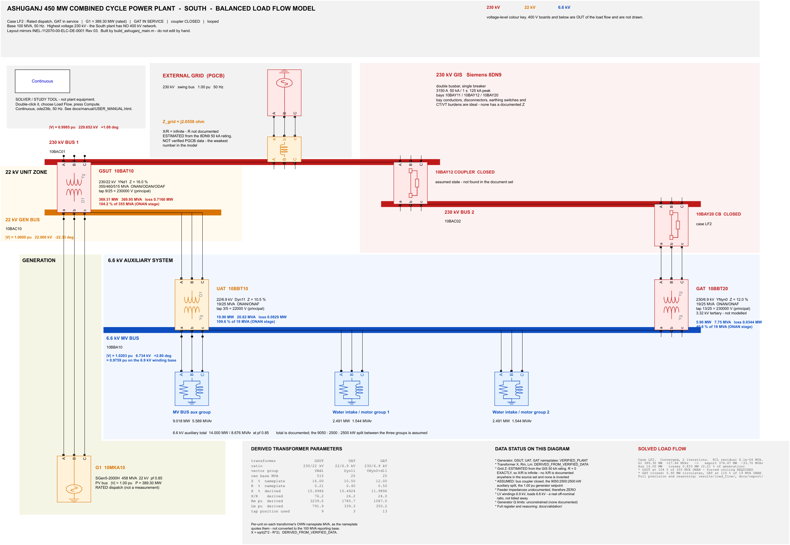
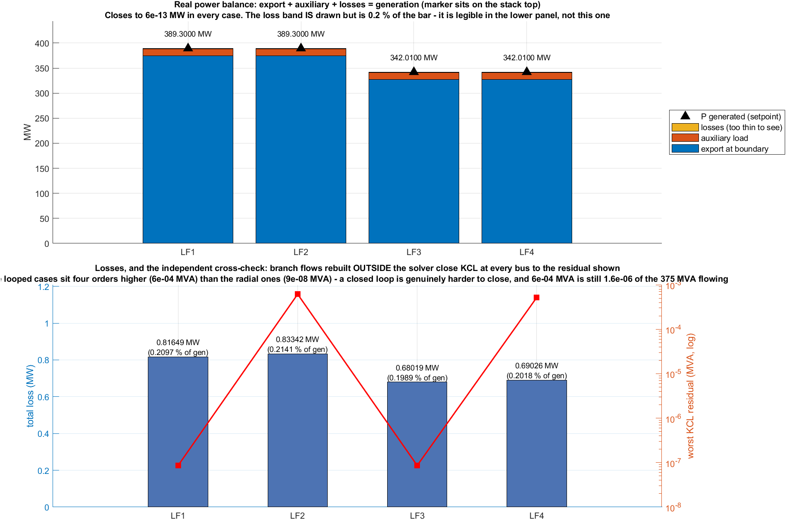
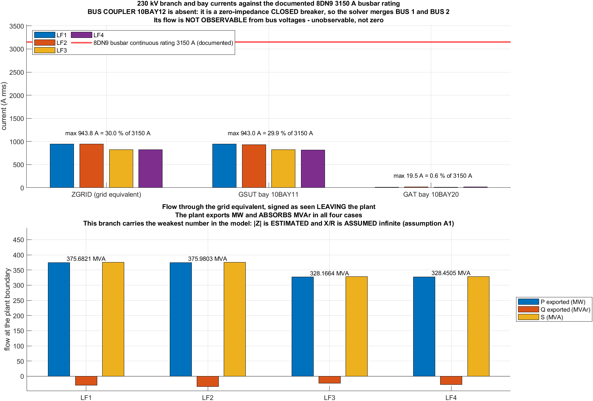

Department of Electrical and Electronic Engineering · BUET
EEE 306 Power System I Laboratory Term Project Report
Protection coordination and fault analysis of the Ashuganj 450 MW combined cycle power plant (South) Stage 1 — balanced steady-state load flow
January 2026 · Group-03, Section C-1 · Solved on MATLAB 24.1.0.2537033 (R2024a) · 100 MVA base · 50 Hz · 4 operating cases
1. Objectives
To reconstruct the electrical single-line diagram of the Ashuganj 450 MW combined cycle power plant (South) as an executable model, from the plant's own engineering drawings and equipment data sheets rather than from typical values.
To represent every component — generator, generator step-up transformer, unit auxiliary transformer, station auxiliary transformer, 230 kV gas-insulated switchgear and the external grid — with parameters that each carry a source document and a status, so that a reader can tell a measured number from a derived one and from an assumed one.
To perform a balanced steady-state load flow and obtain the voltage magnitude and angle at every bus, the active and reactive flow in every branch, and the losses of the plant's electrical system.
To solve the study over more than one operating condition, so that the effect of generator dispatch and the effect of the station auxiliary transformer bay can be attributed separately instead of being confounded in a single answer.
To check the solved answer independently — by rebuilding the power balance at every bus outside the solver — rather than accepting convergence as proof of correctness.
To state, explicitly, every parameter that is missing, uncertain, assumed, derived or in conflict between source documents, and to identify what must be collected before the short-circuit and protection-coordination stages of the project can begin.
Scope of this report. Short-circuit calculation, unbalanced faults, relay modelling, protection grading and transient stability are the later stages of the term project and are deliberately not attempted here. The load flow is the stage that establishes the pre-fault operating point every one of those later studies starts from, and doing it first is not a delay — a fault study run on an unverified operating point produces confident numbers that are wrong.
2. Introduction
The plant
Ashuganj Power Station Company Limited operates a Siemens SCC5-PAC 4000F/3000 (1S) single-shaft combined cycle at Ashuganj, Brahmanbaria. The South block, project number 112070, is a single-shaft arrangement: one gas turbine and one steam turbine sit on a single shaft driving one generator. This matters to the electrical model more than it might appear — a multi-shaft plant of the same output would present two or three generators to the 22 kV bus, and this one presents exactly one.
The engineering was carried out by GHESA / Empresarios Agrupados for the EPC contractor TSK / Inelectra International, with Siemens equipment throughout, and the drawings use the KKS identification system — every item in this report is named by its KKS tag (10BAT10, 10BBT10, 10BAY11) so that any figure here can be traced to an item on the plant's own drawings.
South only. Ashuganj also has a North block, a separate project with its own 400 kV gas-insulated switchgear and its own interbus transformers. It is excluded here, and there is no 400 kV node anywhere in this model. Where a source document in the set carries 400 kV data, that data belongs to the North block and was set aside rather than merged in.
The electrical system to be modelled
Power leaves the generator at 22 kV and reaches the national grid at 230 kV through one step-up transformer. Between those two points the plant taps off its own supply, and it is that tapping which makes the network worth solving rather than a single series calculation:
G1, a Siemens SGen5-2000H hydrogen-cooled generator, delivering into the 22 kV generator bus.
GSUT 10BAT10, the generator step-up transformer, 230/22 kV, raising the whole output to transmission voltage and delivering it into the 230 kV busbars.
UAT 10BBT10, the unit auxiliary transformer, 22/6.9 kV, tapped off the generator side and feeding the plant's own 6.6 kV medium-voltage boards. While the unit runs, the plant feeds itself from its own output.
GAT 10BBT20, the station auxiliary transformer, 230/6.9/3.32 kV, fed from the grid side. Its purpose is to supply the auxiliaries when the unit is not running — on start-up, and after a trip.
The 230 kV gas-insulated switchgear, a Siemens 8DN9 double-busbar single-breaker installation, through which the step-up transformer, the station transformer and the outgoing circuits are connected.
When the station transformer bay is closed while the unit is running, the 6.6 kV board has two sources — the UAT from the generator side and the GAT from the grid side — and the network stops being radial. A closed loop is formed: 230 kV → GSUT → 22 kV → UAT → 6.6 kV → GAT → 230 kV. Power then divides between the two paths according to their impedances, not according to anybody's intention, and that division is one of the things this study exists to quantify.
3. Theory
3.1 What a load flow computes, and what it assumes
A load flow finds the steady-state operating point of a network: the voltage magnitude and phase angle at every bus, from which every branch flow and every loss follows. It assumes the network is balanced across the three phases, that it is in sinusoidal steady state at one frequency, and that nothing is switching. Under those assumptions one phasor per bus describes all three phases, and the whole network can be written in positive-sequence form.
At each bus the complex power injected is the product of the bus voltage and the conjugate of the current entering the network:
S_i = P_i + jQ_i = V_i . conj( sum_k ( Y_ik . V_k ) )
and, separated into real and imaginary parts,
P_i = |V_i| . sum_k |V_k| . ( G_ik.cos(t_ik) + B_ik.sin(t_ik) )
Q_i = |V_i| . sum_k |V_k| . ( G_ik.sin(t_ik) - B_ik.cos(t_ik) )
where t_ik = angle(V_i) - angle(V_k) and Y_ik = G_ik + jB_ik
is the element of the bus admittance matrix Y_bus.
These equations are non-linear in the voltages, so they are solved iteratively. The Newton-Raphson method linearises them about the present estimate using the Jacobian of the mismatch, corrects the estimate, and repeats until the mismatch at every bus falls below a tolerance. Its convergence is quadratic, which is why a well-posed network of this size settles in a very small number of iterations — and why a solve that needs many iterations is a symptom to investigate rather than a result to report.
3.2 Bus classification
Each bus has four quantities — |V|, angle, P and Q — of which two are specified and two are computed. Which two are specified is what defines the bus type, and getting this wrong is the commonest way to make a load flow answer a question nobody asked.
Table 1 — Bus types, and which of them appears in this network
Type
Given
Computed
In this model
Slack (swing)
|V|, angle
P, Q
The 230 kV grid connection. It takes up whatever the plant does not supply and absorbs whatever it exports, and it is the angle reference for the whole network.
PV (generator)
P, |V|
Q, angle
The 22 kV generator bus. The dispatch is specified and the machine holds its terminal voltage; the reactive output that this requires is a result of the study.
PQ (load)
P, Q
|V|, angle
The 6.6 kV auxiliary board, and every bus that neither generates nor is the reference.
Exactly one slack bus exists, and there must be exactly one: without it the losses have no supplier, because the losses are not known until after the solution and so cannot be scheduled beforehand.
3.3 The per-unit system
Every quantity is normalised to a base, so that a transformer ratio disappears from the arithmetic and a value can be compared across voltage levels. The base power is chosen once for the whole system and the base voltage changes with the transformer ratios:
S_base = 100 MVA chosen once, for the whole system
V_base the nominal voltage of each level: 230 kV, 22 kV, 6.6 kV
Z_base = V_base^2 / S_base I_base = S_base / ( sqrt(3) . V_base )
A transformer impedance quoted on its OWN rating must be converted:
Z_new_pu = Z_old_pu . ( S_new / S_old ) . ( V_old / V_new )^2
The base is a reporting convention, not plant data. A per-unit loading on a 100 MVA system base says nothing about whether a transformer is thermally overloaded, because the transformer's own rating is not 100 MVA. In this report every transformer loading is therefore reported a second time, as a percentage of the nameplate rating of each cooling stage. That is the number with a physical meaning.
3.4 The two-winding transformer in a load flow
For a balanced load flow the transformer reduces to a series leakage impedance and an ideal ratio, with a shunt magnetising branch that contributes the no-load loss. The short-circuit test gives the series element and the open-circuit test gives the shunt one:
Z_pu = z_percent / 100 on the transformer's own rating\nR_pu = P_load_loss / S_rated copper loss, from the short-circuit test\nX_pu = sqrt( Z_pu^2 - R_pu^2 ) leakage reactance\n\nX/R is large for a power transformer, so almost all of the nameplate\nimpedance is reactance and the transformer is very nearly a pure\nreactor at fundamental frequency.
The vector group matters. A delta-star transformer introduces a fixed phase shift — 30° per the group number — between its windings. In a radial network the shift is a bookkeeping detail. In a looped network it is not: two paths that meet again must agree about the angle, and a phase shift entered wrongly appears as circulating power that is entirely an artefact. This model carries the vector groups as they are on the nameplates, and the loop cases are the reason for the care.
3.5 The external grid equivalent
The national grid cannot be modelled in detail from a plant's own documents, so it is reduced to a Thévenin equivalent: an ideal voltage source behind a series impedance. The impedance follows from the short-circuit level at the point of connection:
S_k" = sqrt(3) . V_nominal . I_k" the short-circuit level\nZ_th = V_nominal^2 / S_k" the equivalent series impedance\n\nA LARGE S_k" means a SMALL Z_th, i.e. a stiff grid whose voltage barely\nmoves with the plant's export. A small S_k" means a weak grid.
This is the weakest number in the model, and it is labelled as such wherever it appears. No short-circuit level for this busbar was issued by the utility in the document set. The value used is derived from the withstand rating of the switchgear — which is an equipment survivability figure, not a network fault level, and the two are only loosely related. It is used because a load flow needs something there, it is declared rather than presented as data, and its influence on the answers was measured separately by sensitivity test.
4. Software and data used
4.1 Software
Table 2 — Computational environment, read from the running installation
MATLAB
24.1.0.2537033 (R2024a)
Platform
PCWIN64
Simulink
block-diagram environment hosting the network
Simscape Electrical — Specialized Power Systems
the positive-sequence electrical component library
Load flow engine
power_loadflow, reached from the powergui block
System frequency solved at
50 Hz
Reporting base
100 MVA
50 Hz, deliberately and repeatedly. Bangladesh operates at 50 Hz. A previous study of this same plant, carried out in CYME PSAF and supplied with the source material, was built at 60 Hz. That frequency was rejected rather than reconciled: every reactance in this model is at 50 Hz, and the solved frequency is written into every results table so it can be checked rather than trusted.
4.2 Source documents
No parameter in this study was taken from a textbook table of typical values. Every value traces to one of the documents below, and each value in the dataset records which one, together with a status — verified from the plant, verified from an engineering document, derived from verified data, assumed, estimated, missing, or in conflict between two documents.
Table 3 — Engineering documents supplied by APSCL (10 files, listed as found on disk)
Generator electrical data, and the only origin in the whole set of the external grid short-circuit figures.
Generator Name Plate_South.pdf
Generator nameplate - ratings as built.
Google Sheet Form_Filled Up By APSCL.pdf
Data form completed by APSCL. Its 400 kV entries belong to the North block and are outside the scope of this study.
INEL-112070-00-ELC-DE-0001-REV3.pdf
Drawing and device numbering convention - how every tag in the drawings is read.
Single Line Diagram_South.pdf
The governing drawing. Network topology, switchgear arrangement, KKS tags, and which bay connects to what.
UAT Data Sheet_South.pdf
Unit auxiliary transformer data sheet.
UAT Nameplate_South.pdf
Unit auxiliary transformer nameplate.
Two further sources sit alongside those: the structured workbook Ashuganj_South_PSAF_Tabular_Engineer_Source.xlsx, which indexes the plant's data into tables, and the project proposal grp3_eee306_jan26_project_proposal_v2.pdf. The workbook is an index, and it was treated as one: where it disagreed with an original engineering document, the original document was preferred and the disagreement was written down rather than resolved silently.
4.3 How disagreements between documents were handled
Sources were ranked before any of them was used: original engineer and plant documents first, then manufacturer data sheets, then the official single-line diagrams, then the engineer-completed data form, then the structured workbook. Where two sources gave different values for the same quantity, both were kept. Each such case is recorded in docs/validation/conflicting_parameters.md with both values, both sources, and an explanation of why they differ — different cooling stage, different tap, different base, or a genuine discrepancy.
One of those conflicts reaches the results of this report directly and is therefore flagged wherever it appears: the auxiliary transformer secondary windings are rated 6.9 kV on their nameplates, while the medium-voltage system they feed is nominally 6.6 kV. The difference is worth about 4.5 % on any per-unit voltage reported at that bus, so the bus voltage is reported on both bases rather than on whichever one looks better.
5. Procedure
The model is not drawn by hand. It is generated from the dataset by script, which is the reason a parameter can be changed in one place and the diagram, the solution and every table follow. The sequence below is what a run does, in order.
Assemble the dataset. Every parameter, with its source document, page, status and note, is returned by one function. Nothing downstream holds a number of its own.
D = ashuganj_master_data(); % the whole dataset, from one entry point
D.base.Sbase_MVA -> 100 reporting base
D.base.f_Hz -> 50 system frequency
D.buses -> 10 bus records
D.tx -> 3 transformers
D.lines -> 7 branch records
D.loads -> 4 load records
D.cases -> 4 operating cases
Check the dataset before it is used. The validation suite recomputes what can be recomputed — rated currents from ratings and voltages, tap spans from tap voltages, impedance conversions between bases — and fails if a value contradicts another value. It is run before the model is built, not after the results look acceptable.
run_all_tests
Build the network programmatically. One builder per part of the plant, so that each reads like the corresponding sheet of the single-line diagram, and one assembler that places them and wires them together.
Solve each operating case. Each case is built from the dataset fresh and then solved. This is not caution for its own sake: the load flow writes its solution back into the blocks, so a model that has already been solved is no longer in its as-built state and solving it again would start from the previous answer.
run_load_flow_study % builds and solves all 4 cases in turn
% inside, per case:
LF = power_loadflow(sys, 'parameters'); % tolerance, iteration limit, base
LF = power_loadflow(sys, 'solve', LF); % Newton-Raphson solve
power_loadflow(sys, 'report'); % the tool's own report file
Check the solution independently. Convergence is not proof. For every bus, the injection the solver reports is compared against the sum of the branch flows rebuilt from the solved voltages outside the solver. The residual of that comparison is tabulated for every bus in every case, and it is the column that decides whether the rest of the report is worth reading.
Extract, tabulate and draw. Buses, branches, transformers and the generator are written to CSV; the plots and the annotated single-line diagrams are drawn from those CSVs, never by re-solving, so a figure and a table cannot disagree.
make_load_flow_plots
make_annotated_diagrams
build_lab_report % this document
All of the above is one command.RUN_ME at the project root runs the whole sequence and needs no arguments and no path setup. RUN_ME check reports the environment and changes nothing. The click-by-click procedure for demonstrating the solve interactively, in front of an audience, is section 4 of USER_MANUAL.html.
6. Connection diagram
The diagram below is the model, drawn in the arrangement of the plant's own single-line diagram (Single Line Diagram_South.pdf, drawing INEL-112070-00-ELC-DE-0023) and annotated with the solved result at every point. It is generated, not drawn: the numbers on it come from the same CSVs as the tables in section 7.
The model in single-line form with the solved case LF1 written onto it — rated dispatch, station auxiliary transformer bay open, radial network.

The same network with the station auxiliary transformer bay closed (case LF2). The loop 230 kV - GSUT - 22 kV - UAT - 6.6 kV - GAT - 230 kV is now complete, and the auxiliary supply divides between the two paths.
6.1 The buses in the model
Table 4 — Buses represented, with the plant name each one carries
Bus
Plant designation
Nominal
Type
BGRID230
EXT GRID 230 kV
230 kV
swing
B22
22 kV GEN BUS
22 kV
PV
B6_6
6.6 kV MV BUS
6.6 kV
PQ
B6_6_WI1
6.6 kV WI-1
6.6 kV
PQ — solved as one node with B6_6
B6_6_WI2
6.6 kV WI-2
6.6 kV
PQ — solved as one node with B6_6
B230_1
230 kV BUS 1 + BUS 2 (coupler closed)
230 kV
PQ
B230_2
230 kV BUS 2
230 kV
PQ — solved as one node with B230_1
GAT_HV
GAT_HV
230 kV
PQ
Where two buses are solved as one node, it is because what joins them has no impedance to solve across — a closed breaker, or a connection whose impedance is not in the document set. To a load flow that is an identity, not a branch. All of the buses are kept in the table so that nothing looks overlooked, and the merged ones name the node they belong to.
6.2 The branches in the model
Table 5 — Branches represented, and what each one is
Branch
Kind
From
To
ZGRID (grid equivalent)
equivalent
BGRID230
B230_1
BUS COUPLER 10BAY12
breaker
B230_1
B230_2
GAT BAY CB 10BAY20 (open, snubber path)
breaker
B230_2
GAT_HV
What is not in the model, and why. The busducts, the switchgear bays and the 6.6 kV feeders carry no impedance, because none is documented anywhere in the source set. The consequence is stated rather than buried: this model produces no feeder voltage drop and no cable loss at all, so the losses it reports are a floor and the real plant loses slightly more.
7. Data tables
7.1 Equipment parameters entered into the model
These are inputs, not results. Every one of them is on a nameplate or a data sheet in the document set, except where the status column says otherwise.
Table 6 — Generator G1 (Siemens SGen5-2000H) as entered
Quantity
Symbol
Value
Unit
Nominal terminal voltage
V_n
22
kV
Apparent power, 50 °C H2
S_n
458
MVA
Apparent power, 30 °C H2
S_max
518
MVA
Rated power factor
cos phi
0.85
—
Rated stator current
I_n
12019
A
Synchronous reactance
x_d
166.3
%
Transient reactance
x_d'
28.65
%
Subtransient reactance
x_d"
22.48
%
The three reactances are entered into the dataset for the later short-circuit stage. A balanced load flow uses none of them: the machine appears to the solve as a specified real power at a specified terminal voltage.
Table 7 — The three transformers as entered
Transformer
KKS
HV / LV kV
Vector group
Cooling stages MVA
z %
on MVA
R %
X %
X/R
GSUT
10BAT10
230 / 22
YNd1
355 / 460 / 515
16
515
0.21
15.9986
76.2
UAT
10BBT10
22 / 6.9
Dyn11
19 / 25
10.5
25
0.4
10.4924
26.2
GAT
10BBT20
230 / 6.9
YNyn0+d11
19 / 25
12
25
0.5
11.9896
24.0
The reactance column is derived, not read: X = sqrt(z² − R²) from the nameplate impedance and the nameplate resistance. The resistance was independently cross-checked against the measured load loss divided by the rating, which is a different route to the same number.
Table 8 — External grid equivalent as entered
Quantity
Value
Unit
Status
Nominal voltage
230
kV
verified from the drawings
Short-circuit current used
50
kA
estimated from the switchgear withstand rating
Implied short-circuit level
1.992e+04
MVA
derived from the line above, and no stronger than it
Series resistance
0
Ω
assumed zero — X/R is undocumented
Table 9 — Auxiliary load as entered, and how it is allocated
Load
Bus
P MW
Q MVAr
In the model
MV BUS aux group
B6_6
9.018
5.589
yes
Water intake / motor group 1
B6_6_WI1
2.491
1.544
yes
Water intake / motor group 2
B6_6_WI2
2.491
1.544
yes
400 V LV board load
B0_4
—
—
no — rating not documented
The split between the three boards is an assumption, and it is labelled one. The total auxiliary demand and its power factor are documented; the division of that total between the individual 6.6 kV boards is not stated in the source set in a form that could be entered directly. Because the three boards are solved as one node — the feeder impedances between them are not documented either — the split has no effect whatever on any result in this report. It is recorded in matlab/data/assumptions/ so that it becomes a real question the moment feeder impedances are obtained.
7.2 The operating cases solved
Two things could not be settled from the documents: how much the unit is dispatching, and whether the station auxiliary transformer bay is closed while the unit runs. Rather than choose, both were kept. Two independent choices give four cases, and reporting only two would confound the dispatch effect with the transformer effect so that neither could be attributed.
Table 10 — The case matrix
Case
Dispatch
Station aux transformer
Network
What it isolates
LF1
Rated, 389.30 MW
out of service
radial
Base case — maximum export and maximum step-up loading
LF2
Rated, 389.30 MW
in service
looped
The effect of the station transformer, versus LF1
LF3
Derated, 342.01 MW
out of service
radial
The effect of dispatch alone, versus LF1
LF4
Derated, 342.01 MW
in service
looped
Completes the matrix so the two effects can be separated
7.3 Solved results
Table 11 — System summary — the power balance of the whole plant
Case
P gen MW
Q gen MVAr
P aux MW
P loss MW
P export MW
Q export MVAr
Loss % of gen
Iter
LF1
389.300
31.676
14.000
0.8165
374.484
-29.986
0.2097
2
LF2
389.300
27.461
14.000
0.8334
374.467
-33.704
0.2141
2
LF3
342.010
26.174
14.000
0.6802
327.330
-23.417
0.1989
2
LF4
342.010
22.007
14.000
0.6903
327.320
-27.231
0.2018
2
A negative reactive export means the plant is absorbing reactive power from the grid at the point of connection.
Table 12 — Bus voltages and angles, every bus in every case
Case
Bus
Base kV
V pu
V kV
Angle deg
P inj MW
Q inj MVAr
LF1
BGRID230
230
1.000000
230.0000
0.0000
-374.484
29.986
LF1
B22
22
1.000000
22.0000
-22.2247
389.300
31.676
LF1
B6_6
6.6
1.000911
6.6060
4.3342
-14.000
-8.676
LF1
B6_6_WI1 (node of B6_6)
6.6
1.000911
6.6060
4.3342
—
—
LF1
B6_6_WI2 (node of B6_6)
6.6
1.000911
6.6060
4.3342
—
—
LF1
B230_1
230
0.998672
229.6945
1.0787
0.000
0.000
LF1
B230_2 (node of B230_1)
230
0.998672
229.6945
1.0787
—
—
LF1
GAT_HV
230
0.957242
220.1657
4.3320
-0.000
0.000
LF2
BGRID230
230
1.000000
230.0000
0.0000
-374.467
33.704
LF2
B22
22
1.000000
22.0000
-22.3292
389.300
27.461
LF2
B6_6
6.6
1.020280
6.7338
2.7965
-14.000
-8.676
LF2
B6_6_WI1 (node of B6_6)
6.6
1.020280
6.7338
2.7965
—
—
LF2
B6_6_WI2 (node of B6_6)
6.6
1.020280
6.7338
2.7965
—
—
LF2
B230_1
230
0.998485
229.6515
1.0789
0.000
0.000
LF2
B230_2 (node of B230_1)
230
0.998485
229.6515
1.0789
—
—
LF2
GAT_HV
230
0.998487
229.6520
1.0790
-0.000
-0.000
LF3
BGRID230
230
1.000000
230.0000
0.0000
-327.330
23.417
LF3
B22
22
1.000000
22.0000
-23.2091
342.010
26.174
LF3
B6_6
6.6
1.000908
6.6060
3.3497
-14.000
-8.676
LF3
B6_6_WI1 (node of B6_6)
6.6
1.000908
6.6060
3.3497
—
—
LF3
B6_6_WI2 (node of B6_6)
6.6
1.000908
6.6060
3.3497
—
—
LF3
B230_1
230
0.998960
229.7607
0.9426
0.000
0.000
LF3
B230_2 (node of B230_1)
230
0.998960
229.7607
0.9426
—
—
LF3
GAT_HV
230
0.957235
220.1640
3.3476
-0.000
0.000
LF4
BGRID230
230
1.000000
230.0000
0.0000
-327.320
27.231
LF4
B22
22
1.000000
22.0000
-23.2859
342.010
22.007
LF4
B6_6
6.6
1.020818
6.7374
2.2238
-14.000
-8.676
LF4
B6_6_WI1 (node of B6_6)
6.6
1.020818
6.7374
2.2238
—
—
LF4
B6_6_WI2 (node of B6_6)
6.6
1.020818
6.7374
2.2238
—
—
LF4
B230_1
230
0.998768
229.7167
0.9427
0.000
0.000
LF4
B230_2 (node of B230_1)
230
0.998768
229.7167
0.9427
—
—
LF4
GAT_HV
230
0.998770
229.7170
0.9428
-0.000
-0.000
The 6.6 kV bus voltage is reported on two bases, because the documents disagree about which base is correct. The system is nominally 6.6 kV; the transformer windings that feed it are rated 6.9 kV. The table above uses the 6.6 kV system nominal. Against the 6.9 kV winding rating the same solved voltage reads about 4.5 % lower. Both figures are in results/load_flow/bus_results.csv, in the V_pu and V_pu_alt_base columns, and neither is presented as the answer.
Bus voltage profile, all four cases.
Table 13 — Generator operating point
Case
P MW
Q MVAr
S MVA
pf
I A
% of 458 MVA
% of 518 MVA
LF1
389.300
31.676
390.587
0.9967
10250.2
85.28
75.40
LF2
389.300
27.461
390.267
0.9975
10241.9
85.21
75.34
LF3
342.010
26.174
343.010
0.9971
9001.7
74.89
66.22
LF4
342.010
22.007
342.717
0.9979
8994.0
74.83
66.16
The reactive output is a result, and it is unconstrained. The machine's capability curve is not in the document set, so no reactive limit was imposed on the solve. The solved reactive output must therefore be checked against the capability curve when that curve is obtained — the model will not refuse an operating point the machine could not actually hold.
Table 14 — Transformer flows, losses and loading against each cooling stage
Case
Transformer
S LV MVA
S HV MVA
P loss MW
Q loss MVAr
I HV A
Lowest stage %
Highest stage %
LF1
GSUT 10BAT10
375.842
375.185
0.7340
44.5107
943.05
105.87
72.98
LF1
UAT 10BBT10
16.520
17.306
0.0612
1.3238
454.18
91.09
69.23
LF1
GAT 10BBT20
0.065
0.004
0.0211
0.0654
0.01
0.34
0.26
LF2
GSUT 10BAT10
369.946
369.227
0.7160
43.1449
928.25
104.21
71.83
LF2
UAT 10BBT10
20.293
20.825
0.0829
1.8892
546.51
109.60
83.30
LF2
GAT 10BBT20
7.553
7.755
0.0344
0.3578
19.50
40.82
31.02
LF3
GSUT 10BAT10
328.325
327.827
0.5978
34.1195
823.77
92.49
63.75
LF3
UAT 10BBT10
16.520
17.307
0.0612
1.3239
454.19
91.09
69.23
LF3
GAT 10BBT20
0.066
0.003
0.0211
0.0654
0.01
0.35
0.26
LF4
GSUT 10BAT10
323.988
323.431
0.5862
33.2406
812.88
91.26
62.91
LF4
UAT 10BBT10
18.799
19.285
0.0731
1.6301
506.09
101.50
77.14
LF4
GAT 10BBT20
6.371
6.553
0.0310
0.2749
16.47
34.49
26.21
Figures shown in red exceed the nameplate rating of the lowest cooling stage. What that does and does not mean is section 9.
Transformer loading against every cooling stage, all four cases.
Table 15 — Independent check — worst power-balance residual per case
Case
Worst bus
Residual MVA
As a fraction of the plant output
LF1
BGRID230
8.61e-08
2.2e-10
LF2
B230_1
0.000614
1.6e-06
LF3
BGRID230
8.62e-08
2.5e-10
LF4
B230_1
0.000518
1.5e-06
At every bus, in every case, the injection the solver reports was compared against the sum of the branch flows rebuilt from the solved voltages outside the solver. This is the table that licenses the rest: the largest disagreement anywhere is negligible against the quantities being reported. The per-bus detail is results/load_flow/residuals.csv.

Power balance of the plant, all four cases.
8. Sample calculation
Worked on the generator step-up transformer in case LF1, because it carries the whole plant output and is the component whose loading turns out to matter. Each step ends with the figure the study reports, so the arithmetic is checked rather than illustrated.
8.1 Converting the transformer impedance to the study base
The nameplate quotes the impedance on the transformer's own rating. The study reports on a common base, so it must be converted.
nameplate z = 16 % on 515 MVA (the highest cooling stage)
study base S_base = 100 MVA, V_base = 230 kV (unchanged)
Z_pu(study) = Z_pu(own) . (S_base / S_own) . (V_own / V_base)^2
= 0.160000 . (100 / 515) . 1
= 0.031068 pu
and in ohms, referred to the 230 kV side:
Z_base = V_base^2 / S_base = 230^2 / 100 = 529.0000 ohm
Z = 0.031068 . 529.0000 = 16.4350 ohm
The impedance entered into the block is in per-unit on the transformer's own rating, which is what the block expects; the conversion above is what makes the number comparable with the rest of the study. Getting this backwards — entering 0.03107 pu where 0.16 pu was meant — would understate the transformer's impedance by a factor of about 5.2 and is the single easiest mistake to make in a load flow.
8.2 High-voltage current from the solved flow
solved flow at the HV winding S = 375.1852 MVA
solved voltage at that bus V = 0.998672 pu . 230 kV = 229.6945 kV
I = S / ( sqrt(3) . V )
= 375.1852 e6 / ( 1.732051 . 229.6945 e3 )
= 943.05 A
reported in transformer_results.csv 943.05 A
difference -0.0000 A
Using the NOMINAL 230 kV instead of the solved 229.6945 kV would give
941.80 A - low by 1.25 A. The current follows the voltage the network
actually settles at, not the voltage on the nameplate.
Against the switchgear's continuous rating of 3150 A this is about 30 %. The 230 kV switchgear is not the constraint anywhere in this study.
8.3 Loading against each cooling stage
This is the step that changes the conclusion, and it is the reason the study reports loading against every stage rather than only the top one.
The apparent power used is the one on whichever of the two windings carries more, which is always the input winding, because the transformer's own losses have not yet been subtracted from it. In this transformer power flows upward, so that is the 22 kV generator-side winding; in the two auxiliary transformers power flows downward into the board and it is the high-voltage winding instead. Taking the output winding would understate the loading of the lowest stage by about 0.18 percentage points.
8.4 The plant power balance
Nothing in a load flow is more worth checking than this, because it is the one identity that must hold exactly and does not depend on any parameter being right.
generated +389.3000 MW
exported to the grid 374.4835 MW
-----------
retained in the plant +14.8165 MW
auxiliary load +14.0000 MW
transformer losses +0.8165 MW
-----------
accounted for +14.8165 MW
closure error -2.27e-13 MW
This is also the answer to the question the powergui summary block provokes on screen. That block nets all generation, and the slack bus is generation too — a negative one, because it absorbs the export — so it reports a total generation of about 14.82 MW for a plant dispatching 389.30 MW. The small number is the auxiliary load plus the losses, and it is exactly the figure above.
8.5 Where the losses arise
GSUT 10BAT10 0.7340 MW
UAT 10BBT10 0.0612 MW
GAT 10BBT20 0.0211 MW
---------
sum 0.8162 MW
reported system loss 0.8165 MW
difference -2.54e-04 MW
That total is a floor, not an estimate of the plant's losses. It is the copper and iron loss of the transformers and nothing else. The busducts, the switchgear and the 6.6 kV feeders were modelled at zero impedance because no impedance data for them exists in the source set, so they contribute exactly nothing. The real plant loses somewhat more, and a figure for how much more cannot be produced from the data available.
8.6 The grid equivalent, and why it is flagged
assumed short-circuit current I_k" = 50 kA <-- from the GIS
WITHSTAND rating
S_k" = sqrt(3) . V . I_k" = 1.732051 . 230 . 50 = 19.9 MVA
Z_th = V^2 / S_k" = 230^2 / 19.9 = 2655.8112 ohm
entered into the model 2.6558 ohm
assumed series resistance 0 ohm
For scale: the whole plant exports about 376 MVA, so this equivalent
says the grid is roughly 0 times stiffer than the plant is large.
The arithmetic is exact and the input is not. A switchgear withstand rating states what the equipment survives, not what the network delivers; the two are related only loosely, and no utility-issued short-circuit level for this busbar exists in the document set. Every number in this report that depends on grid stiffness therefore rests on that substitution. It was measured rather than waved away: the grid impedance was varied deliberately in a sensitivity test (matlab/tests/test_grid_sensitivity.m) and the plant-side answers barely move — which is why the substitution is tolerable, and is not a reason to believe the number.
9. What each result signifies
9.1 The bus voltages, and why the 230 kV bus sits below 1.0 pu
A per-unit voltage is the solved voltage divided by the nominal voltage of that level, so 1.00 pu is nominal and the interesting content of Table 12 is the departure from it. In case LF1 the 230 kV plant busbar solves at 0.99867 pu — below nominal, while the plant is exporting 374.5 MW into it. That reads like a sign error and is not one.
The reason is reactive, not active. The plant is absorbing about 30.0 MVAr from the grid at the point of connection at the same time as it exports real power. Voltage magnitude along a predominantly inductive path is governed by the reactive flow, and the reactive flow here runs into the plant. So the plant end of that path sits below the source end, and it would sit below it even if the real export were larger. Real power transfer shows up as the angle difference, not as the magnitude difference — which is exactly what the angle column of Table 12 shows.
Where the reactive power goes is the subject of section 9.2, and it is not consumed by the load: the auxiliary load takes only 8.7 MVAr of it.
At the other end of the plant the 6.6 kV board solves slightly above its nominal, at 1.00091 pu on the 6.6 kV system base. That is the step-up ratio of the auxiliary transformer arriving at a lightly loaded bus: 17.31 MVA flowing through a transformer whose lowest cooling stage is 19 MVA drops very little voltage across 10.5 % impedance.
That figure is base-dependent and the base is disputed. On the 6.9 kV winding rating of the transformer that feeds it, the same solved voltage reads about 4.5 % lower — below nominal rather than above it. Nothing in the network changed; only the denominator did. Until the plant states which figure its own operating limits are written against, any statement of the form “the board runs high” or “the board runs low” is a statement about the choice of base, and this report declines to make it.
9.2 The reactive balance — where 60 MVAr goes in a plant with a 8.7 MVAr load
SUPPLIED
generator G1 31.6759 MVAr
drawn from the grid 29.9862 MVAr
--------
61.6621 MVAr
CONSUMED
GSUT 10BAT10 44.5107 MVAr
UAT 10BBT10 1.3238 MVAr
GAT 10BBT20 0.0654 MVAr
auxiliary load at 6.6 kV 8.6764 MVAr
grid equivalent series branch 7.0857 MVAr
--------
61.6621 MVAr
closure error -1.48e-06 MVAr
The identity closes. What it says is that the reactive demand of this plant is overwhelmingly the leakage reactance of the step-up transformer — 44.5 MVAr of the 61.7 MVAr consumed, against 8.7 MVAr for the whole auxiliary load. Pushing 389 MW through 16 % reactance costs reactive power in proportion to the square of the current, and at full output that cost dominates everything else in the plant.
This is why the plant absorbs from the grid rather than supplying. The generator is dispatched at a fixed terminal voltage, and the reactive output that this implies (31.7 MVAr) is less than the transformer chain consumes. The shortfall is made up through the grid connection, and the 230 kV bus voltage follows.
Two practical consequences. First, the generator's reactive output here is an outcome of the assumed voltage set-point, not an operating record — change the set-point and this whole balance moves. Second, no reactive limit was imposed, so the study cannot yet say whether the machine is allowed to hold this point; that requires the capability curve, which is not in the document set.
9.3 Transformer loading — and why “over 100 %” is not yet an overload
In case LF1 the step-up transformer carries 375.84 MVA. Against its 3 cooling stages that is 105.9 %, 81.7 %, 73.0 % — the same transformer, the same flow, 3 different answers. This is the reason Table 14 reports loading against every stage rather than one figure.
A cooling stage is not a rating the transformer has; it is a rating the transformer has while that cooling equipment is running. ONAN means natural convection with no pumps or fans; the higher stages bring oil pumps and forced air into service. So the honest reading of the red figures in Table 14 is not “the transformer is overloaded” but “at this output the transformer cannot be in its lowest cooling stage”. Which stage is actually in service at rated output is a question for the plant, and it is on the list in section 11.
Loading is measured on whichever of the two windings carries more, which is always the input winding — the transformer's own losses have not been subtracted from it yet. For the step-up transformer that is the 22 kV side, because power flows upward; for the auxiliary transformers it is the high-voltage side, because power flows downward into the board. Taking the output winding instead would understate every loading figure in the table, and the rule is stated here so that a reader comparing against another study knows which winding the percentage refers to.
9.4 The principal finding: closing the station transformer bay overloads the unit transformer
Compare case LF1 with case LF2. The dispatch is identical, the auxiliary load is identical, and nothing was added to the plant — the only difference is that the station auxiliary transformer bay is closed. The unit auxiliary transformer's loading rises from 91.09 % to 109.60 % of its 19 MVA natural-cooling stage. Where the extra loading comes from is worth following carefully, because it is not load.
case LF2 - station transformer bay CLOSED
sign convention: POSITIVE = delivered INTO the 6.6 kV board
P (MW) Q (MVAr)
from the UAT (generator side) 19.902 3.964
from the GAT (grid side) -5.903 4.712
--------- ---------
net into the board 14.000 8.676
consumed by the board 14.000 8.676
closure -4.0e-04 -4.5e-04
so the UAT carries 19.902 MW in order to serve a 14.000 MW load,
and 5.903 MW goes straight back out again through the GAT.
Read the second row again: the station transformer's contribution to the board is negative in real power. It is not helping to feed the board at all — it is taking 5.903 MW out of the board and returning it to the 230 kV busbar. The same 5.903 MW had to be pushed into the board by the unit transformer first, so it makes two transformer crossings and does no work at either end.
This is what closing the bay does. The network now contains a loop — 230 kV → GSUT → 22 kV → UAT → 6.6 kV → GAT → 230 kV — and the two paths around it have different impedances and different transformation ratios. A closed loop of unequal branches circulates power whether or not anybody intends it to, and the division follows the impedances rather than the load. The unit transformer's real throughput rises from 14.019 MW to 19.902 MW — 42 % more — while the load it is serving does not change at all.
Why this matters beyond the loading figure. A circulating current is real current. It heats both transformers, it consumes reactive power in both, and it is seen by every relay measuring either branch. An overcurrent setting graded on the radial case would see the unit transformer carrying 42 % more real power than it was graded for, in a configuration involving no fault and no extra load. This is the one result of the load flow with a direct consequence for the protection stage, and it is the reason both topologies were carried through the study rather than one being chosen.
The report does not claim the plant runs this way. Whether the bay is closed during normal running is not stated in the document set; that is precisely why it is a case rather than a setting. What the study establishes is that the answer matters, and by how much.
9.5 The losses, and what the loss figure does not include
The plant's electrical losses come out between 0.6802 and 0.8334 MW across the 4 cases, which is 0.199 to 0.214 % of generation. Losses in a series impedance go as the square of the current, so the loss should scale roughly as the square of dispatch. It nearly does, and the departure is informative:
case P disp MW loss MW predicted* diff MW
----------------------------------------------------
LF1 389.30 0.8165 0.8165 0.0000
LF2 389.30 0.8334 0.8165 0.0169
LF3 342.01 0.6802 0.6302 0.0500
LF4 342.01 0.6903 0.6302 0.0601
* pure quadratic scaling from case LF1, i.e. what the loss
would be if every watt of it were load-dependent.
The measured loss falls off less steeply than the square, because part of it does not depend on the dispatch at all: the transformers' no-load loss is fixed, and the auxiliary load flowing through the unit transformer is the same in every case. Only the step-up transformer's copper loss follows the dispatch, and it does so quadratically. That the residual column is small and of one sign is a check that the model contains the loss mechanisms it is supposed to contain and no others.
The figure is a floor. It is the copper and iron loss of three transformers. The generator busduct, the switchgear, and every 6.6 kV feeder are modelled at zero impedance because no impedance for them exists anywhere in the source documents, so they contribute exactly nothing to this number and no voltage drop either. The real plant loses more. How much more cannot be estimated from the data available, and putting a per-metre figure from a handbook into the model would produce a larger number that was no more true.

Branch loading across the four cases, from the solved branch flows.
9.6 The residual check — why convergence is not the evidence
A Newton-Raphson solve reports convergence when its own mismatch falls below its own tolerance. That is a statement about the solver, not about the network: a model with a component connected to the wrong bus converges perfectly well, and answers a different question. So the solution was checked from outside. At every bus, the injection the solver reports was compared against the branch flows rebuilt independently from the solved voltages. Table 15 is the result.
The worst disagreement anywhere in the radial cases is 8.6e-08 MVA, which against a 376 MVA plant is arithmetic noise — the two calculations agree to about 9 significant figures. In the looped cases it is larger, 6.1e-04 MVA, and that difference has a cause worth stating.
The bus coupler and the switchgear bays are modelled as ideal connections with no impedance. An independent rebuild works from voltages, and the flow through a zero-impedance element cannot be recovered from the voltages at its ends — they are equal by construction. In a radial network that costs nothing, because there is only one path and its flow follows from the load. In a looped network the division between two paths is exactly what a zero-impedance element hides, so the rebuild at those buses is slightly incomplete and the residual records it. It is a limitation of the check, not a defect in the solve, and at 6e-04 MVA it does not affect any figure reported to the precision used here.
All 4 cases converge in 2 iterations. For a 5-node network with quadratic convergence that is what a well-posed problem looks like. A solve of this size that needed twenty iterations, or that needed the tolerance relaxed, would be a symptom to investigate rather than a result to report — and no tolerance was relaxed and no parameter was adjusted to obtain convergence in any case in this study.
9.7 The bus angles, and the vector-group check hidden in them
The angle column of Table 12 looks alarming at first reading: the 22 kV generator bus sits -23.3° from the 230 kV bus. A power transfer angle of that size across a single transformer would be extreme. Almost all of it is not a transfer angle at all — it is the fixed phase shift of the winding connection, and separating the two turns the angle column into a validation of the nameplate data:
GSUT 10BAT10 vector group YNd1 -> nameplate shift 30 deg
solved angle(22 kV) - angle(230 kV) = -23.3034 deg
remove the group shift = 6.6966 deg <- power transfer
sign: LV leads HV, so power flows LV -> HV (generator exporting)
UAT 10BBT10 vector group Dyn11 -> nameplate shift 30 deg
solved angle(6.6 kV) - angle(22 kV) = 26.5589 deg
remove the group shift = -3.4411 deg <- power transfer
sign: LV lags HV, so power flows HV -> LV (board being fed)
Both residues come out at a few degrees, in the direction the power is known to be flowing. That is the check: had a vector group been entered wrongly — a group index off by one, or a star-delta the wrong way round — the residue would not be a few degrees but tens of degrees, and it would appear here rather than quietly distorting the loop division in the cases where the bay is closed. In a radial network a wrong group is harmless bookkeeping; in the looped cases it would manufacture circulating power that was pure artefact, which is why it is worth checking explicitly before believing section 9.4.
The 230 kV grid source is the angle reference for the whole network, so its angle is zero by definition and every other angle in the table is relative to it. Only differences carry meaning.
10. Report questions
The plant exports 374.5 MW, and yet the 230 kV busbar solves below nominal at 0.99867 pu. Reconcile those two statements.
Voltage magnitude along an inductive path is set by the reactive flow, and real power transfer appears in the angle. This plant exports real power while absorbing 30.0 MVAr, so its end of the connection sits below the grid end. The real export shows up instead as the 1.0787° angle at the 230 kV bus. Had the generator been dispatched to supply reactive power rather than absorb it, the same real export would have raised that bus above nominal.
Cases LF1 and LF2 have identical dispatch and identical auxiliary load. Closing the station auxiliary transformer bay adds nothing to the plant, yet the unit auxiliary transformer's loading rises from 91.09 % to 109.60 %. Where does the extra loading come from?
From circulating power, not from load. Closing the bay completes a loop — 230 kV → GSUT → 22 kV → UAT → 6.6 kV → GAT → 230 kV. The two paths back to the 230 kV bus have different impedances and different ratios, so power divides between them by impedance rather than by intention. The unit transformer ends up feeding the board and feeding the station transformer, which returns that power to the busbar it came from. Both transformers carry the circulating component, neither does useful work with it, and both are heated by it. Section 9.4 gives the arithmetic.
Table 14 shows the step-up transformer at 105.87 % loading. Is the transformer overloaded? What would you have to know to answer?
The question cannot be answered from that figure alone, and this is the commonest misreading of a load-flow result. 105.87 % is measured against the ONAN rating of 355 MVA — the rating with no pumps and no fans running. Against the top stage, ODAF at 515 MVA, the same flow is 72.98 %. What must be known is which cooling stage is in service at rated output, and that is a plant operating fact absent from the document set. What the study can assert is the negative: at this output the transformer cannot be running in its lowest cooling stage.
Why is the 6.6 kV bus voltage reported on two different bases, and which of the two figures should the plant use?
Because the documents disagree. The medium-voltage system is nominally 6.6 kV, while the transformer windings feeding it are rated 6.9 kV on their nameplates. Dividing the same solved voltage by the two gives figures about 4.5 % apart — one above nominal and one below it. Which to use is not a modelling question but a documentation question: the correct base is whichever one the plant's own operating limits and relay settings are written against. Until that is established, choosing one would be presenting a preference as a result, so both are reported. Note that no flow in the study is affected — only the per-unit label on a voltage.
Every case converges in 2 iterations. What does that establish, and what does it not?
It establishes that the Newton-Raphson iteration found a point where its own mismatch was below its own tolerance, and that the network is well-conditioned. It establishes nothing at all about whether the network is the plant. A model with a transformer wired to the wrong busbar, or with an impedance entered on the wrong base, converges just as fast and answers a different question. That is why the solved voltages were used to rebuild the power balance at every bus outside the solver (Table 15), and why the vector groups were checked against the solved angles (section 9.7). Convergence is a precondition for reading the results, not evidence that they are right.
With identical real dispatch, the generator's reactive output is 31.676 MVAr in case LF1 and 27.461 MVAr in case LF2. Which is the machine's true reactive output?
Neither, in the sense the question implies. Reactive output is not a property of the machine; it is what the network requires of the machine to hold the specified terminal voltage. Change the network — here, by closing one bay — and the requirement changes. Both figures are correct answers to different questions, which is the whole reason for solving a case matrix instead of one case.
Two caveats travel with both numbers. The terminal voltage they are computed from is an assumption, not an operating record, so the reactive figures inherit that status. And no reactive limit was imposed, because the machine's capability curve is not in the document set — the solver would happily report a reactive output the generator could not actually sustain, and it must be checked against the curve when the curve is obtained.
The external grid is represented by a short-circuit level inferred from the switchgear's withstand rating. Suppose the true level is half that. What in this report changes, and what does not?
Very little of this report changes. Halving the assumed level doubles the equivalent series impedance, which moves the 230 kV bus voltage and, through it, the reactive drawn from the grid. It barely touches the plant-side answers: the dispatch is specified, the auxiliary load is specified, and the transformer flows that follow from them are almost unmoved. That insensitivity was measured rather than asserted — matlab/tests/test_grid_sensitivity.m varies the impedance deliberately and reports what moves.
The short-circuit study is a different matter entirely. There the grid impedance is one of the two dominant terms in every fault current at 230 kV, and halving the level roughly halves the grid contribution. Every breaker duty check and every 230 kV relay setting would move with it. So the tolerable weakness of this input in a load flow becomes intolerable in the next stage, and a utility-issued fault level for this busbar is the single most important item on the collection list in section 11.
The generator's reactances are in the dataset — x_d = 166.30 %, x_d′ = 28.65 %, x_d″ = 22.48 % — and none of them is used by the load flow. Why enter them, and when do they come into play?
A balanced load flow sees the machine as a boundary condition: a specified real power at a specified terminal voltage. What lies behind the terminals is irrelevant, because nothing is changing and no fault is drawing on the machine's internal flux. They are entered because they are the parameters the next stage runs on, and because they were on the nameplate in front of us: the subtransient value sets the initial symmetrical fault current, the transient value governs the first cycles that a relay must coordinate within, and the synchronous value governs the sustained condition. Capturing them during the data audit, with their source recorded, means the fault study begins with verified machine data instead of a fresh search.
11. What to perform next
This report closes one stage of the term project and defines the next. It does that in two parts: the data that has to be obtained before another study can honestly be run, and the studies themselves in the order their inputs become available.
11.1 Data still to be collected
Listed in the order that unblocks the most work. The right-hand column is the point of the table — each item is here because a specific study cannot be run without it, not because the list looked short.
Table 16 — Outstanding data, who holds it, and what it unblocks
#
What is needed
Held by
What it unblocks
1
Three-phase and single-phase short-circuit level at the 230 kV Ashuganj busbar, with X/R
PGCB (system planning)
The whole short-circuit stage. The value in use is inferred from the switchgear withstand rating, which is not a network fault level. Highest priority in the list.
2
Generator capability curve (P–Q diagram), and the reactive limits actually applied
Siemens / APSCL operations
Whether the reactive outputs this study reports are operating points the machine can hold. No reactive limit is imposed at present.
3
Generator terminal voltage set-point in normal running, and a dispatch record
APSCL operations (log sheets)
Replaces the assumed 1.00 pu set-point, which is the datum every voltage in this report is measured against, and the assumed dispatch.
4
Cooling stage in service at rated output, and the tap position in service on each transformer
APSCL operations
Turns the loading figures from a range into a number, and settles whether the step-up transformer reading above 100 % means anything.
5
Normal running state of the station transformer bay and the 230 kV bus coupler
APSCL operations
Chooses between the case pairs in this report instead of carrying all of them, and fixes which topology the protection settings must suit.
6
6.6 kV feeder and busduct impedances — cable type, size, length, or a cable schedule
Plant cable schedule / EPC records
Real losses instead of a floor, feeder voltage drop, per-node voltages, and the point at which the load allocation starts to matter.
7
400 V board transformer ratings and impedances, and the LV load breakdown
Plant records
The low-voltage voltage profile. The LV demand is already inside the 6.6 kV total, so the power balance is not affected.
8
Outgoing 230 kV line data: R₁, X₁, susceptance, length, circuit count, remote end
PGCB
Any study that extends past the plant boundary. The present model stops at the busbar and represents everything beyond it as one equivalent.
9
CT and VT ratios, relay makes and models, and the settings currently applied
APSCL protection department
Protection coordination — the stated objective of the term project.
10
Generator x_q, R_a, inertia constant H and the open-circuit time constants
Siemens
Transient stability, if that stage is attempted. None of them is needed for a balanced load flow, which is why their absence has not blocked this stage.
11
Confirmation of zero-sequence data and the neutral earthing resistor value
Siemens / APSCL
Unbalanced fault analysis — single line to ground and line to line. Zero-sequence impedance is already in the dataset for the transformers but is unused by a balanced study.
Items 1 to 5 are the ones that change conclusions already in this report. Items 6 to 11 extend the study rather than correct it.
11.2 Everything assumed, estimated or simplified in this model
Nothing in the model is a typical value quietly substituted for a missing one. Where a number could not be sourced, one of three things was done, and the three are kept apart because they carry different weight.
Table 17 — Approved assumptions — values that enter the model and are not plant data (3)
Assumption
Value used
Approved
What it is worth in the answers
External grid equivalent series resistance (and hence X/R ratio) grid_series_resistance_zero.m
0
2026-08-17
Negligible here. The equivalent is almost purely reactive at X/R above 20, and the plant-side answers are set by the specified dispatch and load. It matters for fault X/R, not for this load flow.
Allocation of the 14 MW documented auxiliary load across three 6.6 kV nodes aux_load_allocation_split.m
[9050 2500 2500]
2026-08-17
Exactly nothing. The three boards are joined by zero-impedance feeders, so they solve as one node and every result is identical to a single lumped load. Verified numerically, not asserted. It begins to matter the moment feeder impedances arrive.
230 kV GIS bus coupler (BUS 1 - BUS 2) normal operating state gis_bus_coupler_closed.m
closed
2026-08-17
Decides whether the two 230 kV busbars are one node or two. With the station transformer bay closed it also decides whether the loop of section 9.4 exists, so it is not cosmetic.
Each of those is a file in matlab/data/assumptions/, never in matlab/data/, so an assumed number cannot be mistaken for a measured one by anybody reading the dataset. Each file carries its own reason, its approval date, and its quantified effect at greater length than the table above.
One further value is estimated rather than assumed. The external grid short-circuit current, 50 kA, is taken from the withstand rating of the 230 kV switchgear because no utility figure exists in the document set. It is marked ESTIMATED in the dataset, it is item 1 in the collection list above, and its influence was measured by sensitivity test rather than assumed to be small.
1 assumption has been retired and is retained rather than deleted, because a register that quietly drops its own mistakes is not an audit trail: transformer_magnetising_inductance.m — superseded once data was found that made the parameter derivable. It enters nothing into the model.
Table 18 — Structural simplifications — treatments that enter no number at all (12)
S1
Generator modelled as an ideal PV source, not Synchronous Machine pu Standard, because x_q, Ra, H and the open-circuit time constants are MISSING. A balanced load flow uses none of them.
S2
GAT tertiary (3.32 kV, d11) omitted, as approved. Exact for a balanced load flow; a stated limitation for the later earth-fault study.
S3
NER 10BAB11 omitted. Pure zero-sequence element; carries no balanced current.
S4
400 V auxiliary board and its 6.6/0.4 kV transformers omitted (C16 - ratings MISSING). LV demand retained inside the 14 MW total at 6.6 kV, so the power balance is complete and only the LV voltage profile is unavailable.
S5
All busducts, GIS bays and 6.6 kV feeders modelled as zero impedance because no impedance data exists. Consequence: no feeder voltage drop is produced anywhere in the model.
S6
Grid equivalent placed OUTSIDE the source block as an explicit series branch, because SPS enforces the swing voltage at the source terminal and would otherwise bypass an internal impedance.
S7
Transformer leakage impedance split equally between windings. Numerically inconsequential for a two-winding load flow - only the series total acts.
S8
Transformer core type left at the SPS default (three single-phase units) because the physical core construction is undocumented. Irrelevant to a balanced load flow.
S9
Loads modelled as constant PQ so that a sagging solved voltage cannot silently reduce the documented auxiliary demand.
S10
Transformer winding voltages entered at NAMEPLATE values (UAT and GAT LV = 6900 V), while per-unit reporting at the MV bus uses the 6600 V system nominal. Conflict C13 is preserved, not resolved.
S11
Zero-sequence impedances (Z0) entered into the transformer blocks although a balanced load flow ignores them, so the later fault study inherits verified data.
S12
Generator internal impedance disabled (ideal source). Sensitivity-checked against an internal impedance at x_d-double-prime = 22.48 percent.
These are the third category, and the reason they are listed separately is that none of them is a value. Each is a decision to represent something as what it is electrically — a zero-sequence element carries no balanced current, a closed breaker is an identity rather than a branch — or a decision to leave something out and say so. They cannot be wrong in the way a number can be wrong, but they bound what the model is entitled to be asked, and section 11.3 says which of them the next stage has to undo.
11.3 The studies that follow, in order
The order is not a preference. Each stage needs the operating point the previous one establishes, and each needs inputs that the collection list above has to supply first.
Three-phase short-circuit study. Fault levels at the 230 kV busbar, the 22 kV generator bus and the 6.6 kV boards, and a breaker duty check against the ratings already in the dataset — 50 kA for one second and 125 kA peak on the 230 kV switchgear.
Needs: item 1, the utility fault level. That is the only genuinely missing input; the generator subtransient reactance (22.48 %) and every transformer impedance are already in the dataset with their sources recorded. Undoes: nothing structural — a balanced three-phase fault uses the same positive-sequence network this study already contains.
Unbalanced fault analysis — single line to ground, line to line, and double line to ground.
Needs: item 11, confirmation of the zero-sequence data and the neutral earthing resistor. Undoes: three of the structural simplifications listed in 11.2, and this is where they stop being harmless. The neutral earthing resistor carries no balanced current and was omitted — in an earth fault it is the element that limits the fault current, so it must be modelled. The delta tertiary of the station transformer was omitted for the same reason and becomes a zero-sequence path that has to be represented. The transformer zero-sequence impedances are already carried in the dataset, unused, for exactly this stage.
Protection coordination. The stated objective of the project: grading the overcurrent and earth-fault elements, differential protection of the generator and the transformers, and time-current curves that clear a fault without tripping on load.
Needs: item 9, the current transformer ratios and the relay data, and the fault currents from the two stages above. Uses this report directly: the load currents in Table 14 are the currents the settings must not operate on, and they are the reason a load flow comes first. The finding in section 9.4 belongs here too — a setting graded on the radial case would see materially more current in the unit auxiliary transformer as soon as the station transformer bay is closed, with no fault present.
Transient stability, if the project extends that far.
Needs: item 10 — the inertia constant, the quadrature reactance, the open-circuit time constants, and governor and exciter models, none of which is in the document set. The single-shaft arrangement matters here in a way it does not in a load flow: one shaft carries both turbines and the generator, so there is one inertia and one swing equation rather than two machines to synchronise.
Each of those stages must be run on a solved operating point, not on nameplate ratings. Fault current depends on the pre-fault voltage profile; relay grading depends on the load current the relay sees in normal running. Both come from a load flow. Running the fault study first would produce numbers to four figures that were wrong in the first, and nothing in the output would say so — which is why this stage was completed and documented before any of the rest was attempted.
11.4 What the next stage inherits
The work already done is not only this report. What carries forward to the stages above:
A dataset in which every parameter carries its source document, page, status and confidence — 10 bus records, 3 transformers, 7 branches, 4 loads. A fault study starts from verified machine and transformer data instead of a fresh search.
A network that is generated from that dataset by script. A parameter changes in one place and the diagram, the solution, every table and every figure follow. Nothing has to be re-drawn by hand for the next study.
A case matrix and the machinery to solve it — 4 cases built fresh and solved in sequence. Adding a fault case is adding a row, not writing a new study.
An independent check that does not trust the solver: the power balance at every bus rebuilt from the solved voltages outside it. The same harness checks a fault study.
A validation suite that recomputes what can be recomputed from the nameplates and fails on a contradiction, run before the model is built rather than after the results look acceptable.
Machine reactances (x_d 166.30 %, x_d′ 28.65 %, x_d″ 22.48 %) and transformer zero-sequence impedances already captured with their sources, unused by this study and required by the next two.
A written record of every gap: what is missing, what is assumed, what is estimated, what two documents disagree about, and what was simplified. None of it has to be rediscovered, and none of it is hidden in order to make a result look finished.
The single next action is item 1 of 11.1: obtain the three-phase and single-phase short-circuit level at the 230 kV Ashuganj busbar from PGCB, with X/R. It is the only input the short-circuit stage lacks, it is the weakest number in the present model, and it is the parameter every 230 kV protection setting will ultimately rest on.